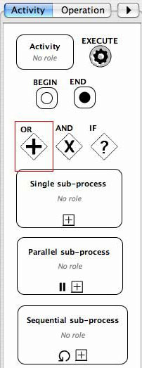
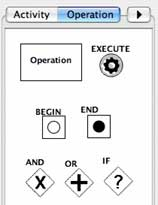
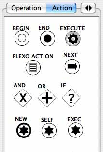
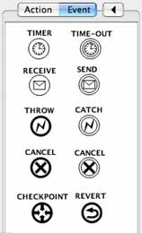

The Palette contains all the graphical elements that can be dragged in the
central panel.
The palette has four tabs:
-
Activity tab with activities, sub-processes and associated
operators.
-
Operation tab with operation and associated operators.
-
Action tab with action and associated operators.
-
Event tab with events.
